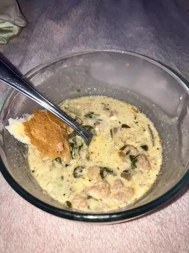

Super-Delicious Zuppa Toscana

Description
This zuppa toscana recipe is hearty, flavorful, and delicious — not to mention identical to a popular menu item at a certain chain restaurant!
Ingredients
- Meat: This meaty zuppa toscana soup calls for both mild Italian sausage and bacon.
- Spices: Crushed red pepper flakes and fresh garlic lend bold, spicy flavor.
- Vegetables: You'll need an onion, six potatoes, and fresh spinach.
- Broth: Use store-bought or homemade chicken broth.
- Cream: A cup of heavy cream is essential for this rich, decadent soup.
Steps
- Cook the Italian sausage with the red pepper flakes.
- Cook the bacon, then cook the onion and garlic in the bacon drippings.
- Add the broth and bring to a boil, then add the potatoes and simmer
- Reduce the heat and stir in the cream, cooked sausage, and spinach.